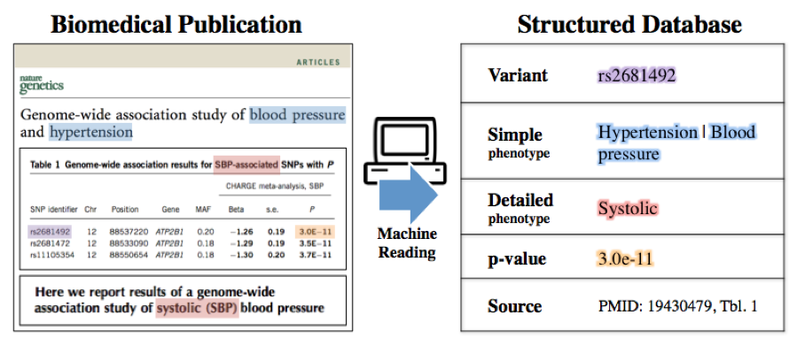
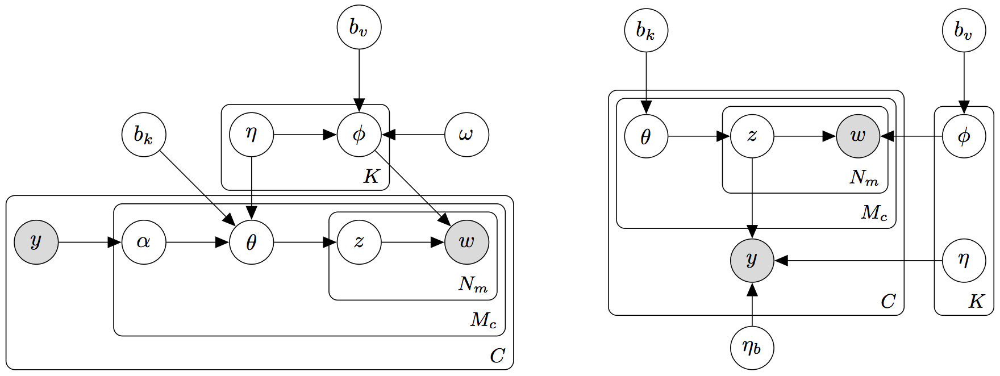
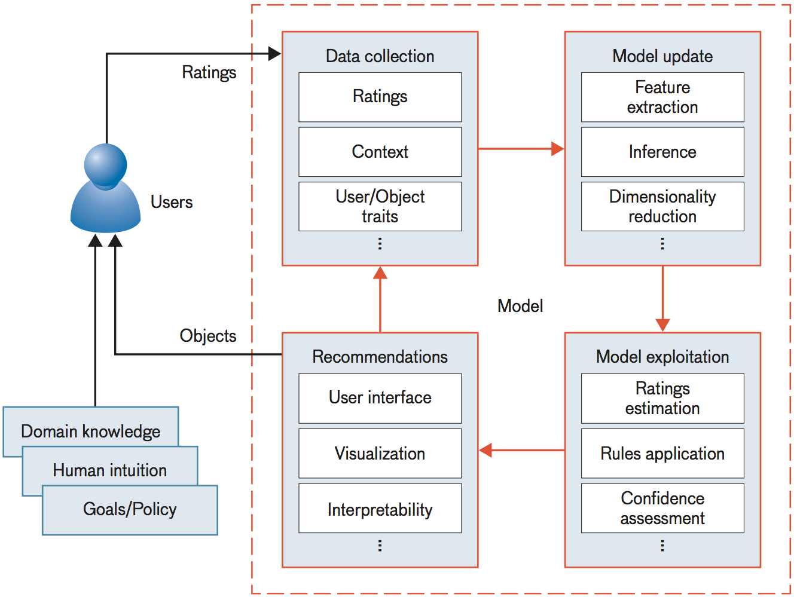
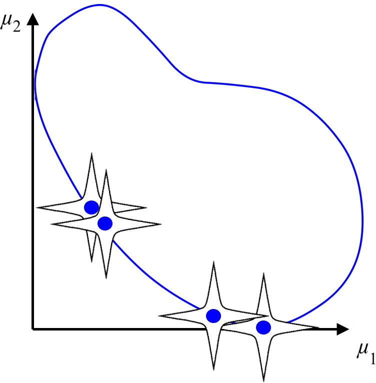
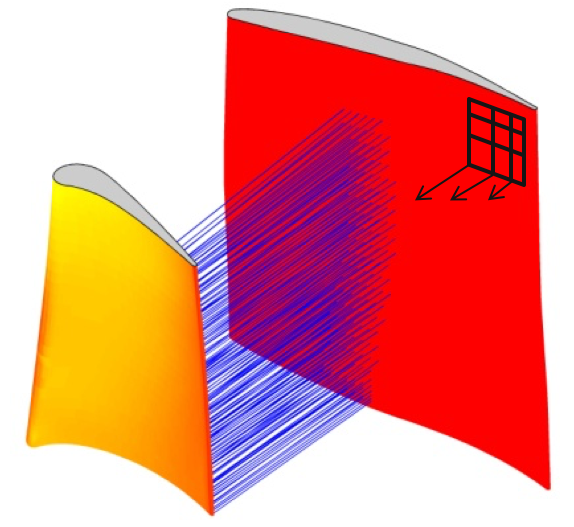
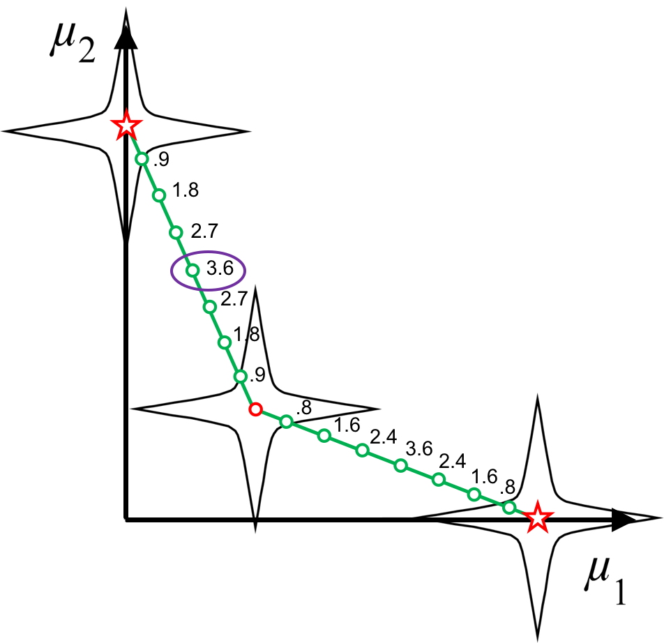
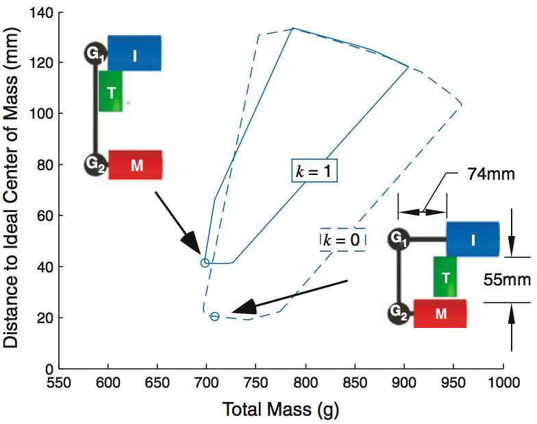

Braden Hancock
Ph.D. Candidate - Machine Learning
I'm a fourth-year Computer Science Ph.D. Candidate and NSF Fellow at
Stanford University.
I research how to get supervision signal from a human into a model as quickly, easily, and efficiently as possible.
My goal is to make it possible for non-ML experts to create near
state-of-the-art machine learning systems for new tasks in
hours instead of months.
Research interests:
machine learning systems, weak supervision, multi-task learning, training data creation, learning from natural language, transfer learning, information extraction, natural language processing, knowledge integration
machine learning systems, weak supervision, multi-task learning, training data creation, learning from natural language, transfer learning, information extraction, natural language processing, knowledge integration
News
- Jan. 2019: Posted our paper on self-feeding chatbots from my time at FAIR to arXiv.
- Dec. 2018: Posted a technical report on Snorkel Drybell, a collaboration between the Snorkel project and Google.
- Dec. 2018: Snorkel and Software 2.0 got shoutouts in Kunle Olukotun's NeurIPS keynote!
- Dec. 2018: Babble Labble (w/ P. Liang) and learning from dialog (w/ J. Weston) were included in invited talks at the Learning by Instruction Workshop at NeurIPS.
- Nov. 2018: Snorkel MeTaL has been accepted to AAAI 2019 (oral + poster).
- Oct. 2018: Software 2.0/massively multi-task (MMT) vision paper accepted to CIDR 2019.
- Oct. 2018: Released Snorkel MeTaL v0.3.
- Sep. 2018: Started a research internship with Facebook AI Research (FAIR) in Paris, France.
- Aug. 2018: Snorkel has been invited to the annual "Best Of VLDB" Special Issue!
- Jul. 2018: Posted "Title Generation for Web Tables" to arXiv.
- Jul. 2018: Presented "Training Classifiers with Natural Language Explanations" (Babble Labble) at ACL (long talk).
- Jun. 2018: "Snorkel MeTaL: Weak Supervision for Multi-Task Learning" presented (long talk) at DEEM (SIGMOD workshop).
- Jun. 2018: "Fonduer: Knowledge Base Construction from Richly Formatted Data" presented (long talk) at SIGMOD.
- May 2018: Chris Potts created an excellent assignment for Stanford CS224U (Natural Language Understanding) based on data programming/Snorkel.
Experience

Stanford University
2015-Present
Groups: Stanford StatsML, Stanford DAWN, Stanford NLP Group, Stanford InfoLab
Mentors: Chris Ré, Percy Liang
Topics: Weak supervision, multi-task learning, information extraction
Groups: Stanford StatsML, Stanford DAWN, Stanford NLP Group, Stanford InfoLab
Mentors: Chris Ré, Percy Liang
Topics: Weak supervision, multi-task learning, information extraction

Facebook
Fall 2018
Groups: Facebook AI Research (FAIR) - Paris
Mentors: Jason Weston, Antoine Bordes
Topics: Self-feeding chatbots, learning from dialogue, multi-task learning
Groups: Facebook AI Research (FAIR) - Paris
Mentors: Jason Weston, Antoine Bordes
Topics: Self-feeding chatbots, learning from dialogue, multi-task learning

Google
Summer 2017
Groups: Google Brain, Google Search - Mountain View
Mentors: Hongrae Lee, Cong Yu, Quoc Le
Topics: Abstractive summarization of semi-structured content, recurrent neural networks
Groups: Google Brain, Google Search - Mountain View
Mentors: Hongrae Lee, Cong Yu, Quoc Le
Topics: Abstractive summarization of semi-structured content, recurrent neural networks

MIT Lincoln Laboratory
Summers 2014-2015
Group: Computing & Analytics - Boston
Mentors: Vijay Gadepally, Jeremy Kepner
Topics: Recommender systems for Department of Defense applications, cryptography
Group: Computing & Analytics - Boston
Mentors: Vijay Gadepally, Jeremy Kepner
Topics: Recommender systems for Department of Defense applications, cryptography

Johns Hopkins University
Summer 2013
Group: Human Language Technology Center of Excellence - Baltimore
Mentors: Mark Dredze, Glen Coppersmith
Topics: Public health trend extraction from social media, topic modeling
Group: Human Language Technology Center of Excellence - Baltimore
Mentors: Mark Dredze, Glen Coppersmith
Topics: Public health trend extraction from social media, topic modeling

Brigham Young University
2011-2015
Group: Design Exploration Research Group
Mentor: Chris Mattson
Topics: Multi-objective optimization, design space exploration
Group: Design Exploration Research Group
Mentor: Chris Mattson
Topics: Multi-objective optimization, design space exploration

Air Force Research Laboratory
Summer 2011
Group: Turbine Engine Division
Mentor: John Clark
Topics: Evolutionary algorithms for optimization, turbine engine simulation
Group: Turbine Engine Division
Mentor: John Clark
Topics: Evolutionary algorithms for optimization, turbine engine simulation
Research

|
Snorkel: A System for Fast Training Data Creation
Snorkel is a system for rapidly creating, modeling, and
managing training data. It is the flagship implementation
of the new data programming paradigm for supporting weak
supervision resources. Development is ongoing, with
collaborators and active users at over a dozen major
technical and medical organizations (e.g., Google, Intel,
Toshiba, JPL, Alibaba, Stanford Medicine, etc.) and 1000+ stars
on Github.
I am one of the core developers and maintainers of the Snorkel
project, including a recent reimplementation from scratch for
improved speed and ease of use as a part of Snorkel MeTaL.
VLDB 2018, Ongoing
"Best of VLDB"
|

|
Software 2.0: Learning-Centric Software Stacks
Driven by accuracy improvements and deployment advantages, many organizations have begun to shift toward learning-centered
software stacks.
That is, "Software 1.0" code with explicit instructions written by programmers is being replaced by "Software 2.0" code that is written in the weights of neural networks.
In this paradigm, training data becomes the primary interface through which developers interact with their Software 2.0 systems.
This requires a new level of scalability, control, and efficiency when it comes to generating and shaping training sets.
We are exploring the ramifications of this new programming model and building the tools to support it.
CIDR 2019, Ongoing
|

|
Self-Feeding Chatbots
Most of the conversations a chatbot sees over its lifetime happen after it's deployed.
These conversations aren't typically useable as training data, but give the chatbot the
right tools and it can learn from those too! We introduced a multi-task "self-feeding"
chatbot that knows how to extract new training examples from the conversations it
participates in to improve itself further after it's deployed.
Ongoing
[pdf]
|

|
Snorkel MeTaL: Weak Supervision
for Multi-Task Learning
There is increasing interest in both multi-tasking
learning (MTL) and weak supervision. We propose an
end-to-end system for multi-task learning
that leverages weak supervision provided at multiple
levels of granularity. MeTaL learns a re-weighted model
of these weak supervision sources that takes into
account their place in overall hierarchy of sub-tasks,
then uses the combined signal to train a multi-task
network that is automatically compiled from the
structure of the sub-tasks.
AAAI 2019 (oral), DEEM (SIGMOD) 2018 (oral), Ongoing
|
|
|
Babble Labble: Learning from Natural Language Explanations
We explore collecting natural language explanations
for why annotators give the labels they do and
parsing these into executable functions, which can then
be used to generate noisy labels for large amounts of
unlabeled data. The resulting probabalistically labeled
training dataset can then be used to train a powerful
downstream discriminative model for the task at hand.
We find that utilizing these natural language explanations
allows real-world users to train classifiers with
comparable F1 scores up to 100 times faster than when they
provide just labels.
ACL 2018 (oral), NeurIPS 2017 Demo
|

|
QALF: Information Extraction
for the Long Tail via Question Answering
We use a Question Answering (QA) model as a flexible means of
converting domain expertise expressed as natural language
into weak supervision resources (labeling functions, or LFs).
Preliminary results suggest that with as few as a dozen user inputs
(domain-relevant questions), we can quickly build first-order
extractors for new relations that lack distant supervision resources.
|

|
Fonduer: Knowledge Base Construction from Richly Formatted Data
We introduce an information extraction framework that utilizes
multiple representations of the data (structural, tabular,
visual, and textual) to achieve state-of-the-art performance
in four real-world extraction taks. Our framework is currently
in use commercially at Alibaba and with law enforcement agencies
fighting online human trafficking.
SIGMOD 2018
|
|  |
A Machine-Compiled Database of Genome-Wide Association Studies
Using the multi-modal parsing and extraction tools from Fonduer and learning and inference tools from
Snorkel, we construct a knowledge base of genotype/phenotype associations extracted from the text
and tables in ~600 open-access papers from PubMed Central. Our system expands existing manually
curated databases by approximately 20% with 92% precision.
Bio-Ontologies 2017, NeurIPS 2017 MLCB Workshop
[pdf]
|

|
Automatic Table Title Generation with a Pointer-Generator Network
We introduce a framework for generating titles for tables
that are displayed out of their original context. We use a
pointer-generator network, a recently introduced
sequence-to-sequence model that is capable of both generating
tokens and copying tokens from the input (such as rare and
out-of-vocab words), resulting in titles that are both relevant
and readable.
[pdf]
|
|  |
Collective Supervision of Topic Models for Predicting Surveys with Social Media
We use topic models to correlate social media messages
with survey outcomes and to provide an interpretable
representation of the data. Rather than rely on
fully unsupervised topic models, we use existing aggregated
survey data to inform the inferred topics, a class
of topic model supervision referred to as collective supervision.
AAAI 2016
|
|  |
Recommender Systems for the Department of Defense and Intelligence Community
With an internal committee of 20 MIT and DoD researchers,
I spearheaded the construction of this report, which
formalizes the components and complexities of recommender systems
and surveys their existing and potential uses in the
Department of Defense and U.S. Intelligence community.
MITLL Journal 2016
[pdf]
|
|  |
L-dominance: An approximate-domination mechanism for adaptive resolution of Pareto frontiers
We propose a mechanism called L-dominance (based on the
Lamé curve) which promotes adaptive resolution of solutions
on the Pareto frontier for evolutionary multi-objective
optimization algorithms.
SMO Journal, AIAA ASM 2015, Honors Thesis
Best Student Paper
|
|  |
Reducing Shock Interactions in a High Pressure Turbine via 3D Aerodynamic Shaping
We show that the shock wave reflections inside a turbine
engine can be approximated by calculating the 3D surface
normal projections of the airfoils. Using a genetic algorithm,
We produce superior airfoil geometries (with respect to
high cycle fatigue failure) four orders of magnitude faster
than the traditional CFD-based approach.
AIAA Journal, AIAA ASM 2014
Best Student Paper
|
|  |
The Smart Normal Constraint Method for Directly Generating a Smart Pareto Set
We introduce the Smart Normal Constraint (SNC) method, the
first method capable of directly generating a smart Pareto
set (a Pareto set in which the density of solutions varies
such that regions of significant tradeoff have the greatest
resolution). This is accomplished by iteratively updating
an approximation of the design space geometry, which is
used to guide subsequent searches in the design space.
SMO Journal, AIAA MDO 2013
|
|  |
Usage Scenarios for Design Space Exploration with a Dynamic Multiobjective Optimization Formulation
We investigate three usage scenarios for formulation space
exploration, building on previous work that introduced a new
way to formulate multi-objective problems, allowing a designer
to change up update design objectives, constraints, and variables
in a fluid manner that promotes exploration.
RiED Journal, ASME DETC 2012
Best Paper
[pdf]
|
Education
Stanford University
Brigham Young University
B.S. Mechanical Engineering, Mathematics Minor (Apr. 2015)
Advisor: Chris Mattson
Valedictorian, summa cum laude (GPA 4.00)
Advisor: Chris Mattson
Valedictorian, summa cum laude (GPA 4.00)
Awards


National Defense Science and Engineering Graduate Fellowship (NDSEG)
2015 (declined for incompatibility with NSF)
[website]


Last updated on 28 Aug 2018.